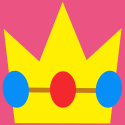

Peache's emblem
Princess Peach's initial appearance was drawn by Shigeru Miyamoto. Miyamoto later asked Yōichi Kotabe to redraw Peach with his instructions.
He had asked Kotabe to draw her eyes to be "a little cat-like".With Kotabe's influence, Princess Peach changed considerably throughout her gaming system.
Peach was not a playable character in New Super Mario Bros. Wii because a satisfactory mechanism to use her dress was not found, however,
she is the main protagonist in Super Princess Peach and is a playable character in most Mario spin-offs such as Mario Party, Mario Kart, and also sports games.
Design and characteristics
Old artwork of peach
Princess Peach has long, blonde hair (except in Super Mario Bros. 2 and Super Mario Bros. 3, where she has brown hair), blue eyes, tall frame, an hourglass figure, and a rosy complexion. She generally wears a pink evening gown with frilly trimmings, short puffy sleeves, and a pannier-style overskirt. Her accessories are red high heels, white evening gloves, a cyan brooch, cyan earrings, and a gold crown adorned with cyan jewels and red jewels. Her hair is sometimes pulled back into a ponytail, first in Super Mario Sunshine and later in the Mario Kart and Mario Sports games beginning with Mario Kart: Double Dash!! and Mario Golf: Toadstool Tour respectively. In sports games, she wears pink athletic clothing, ranging from shorts and a T-shirt to a set of armour to motorcycle leathers. She also wears a different version of her evening gown in Super Mario Sunshine